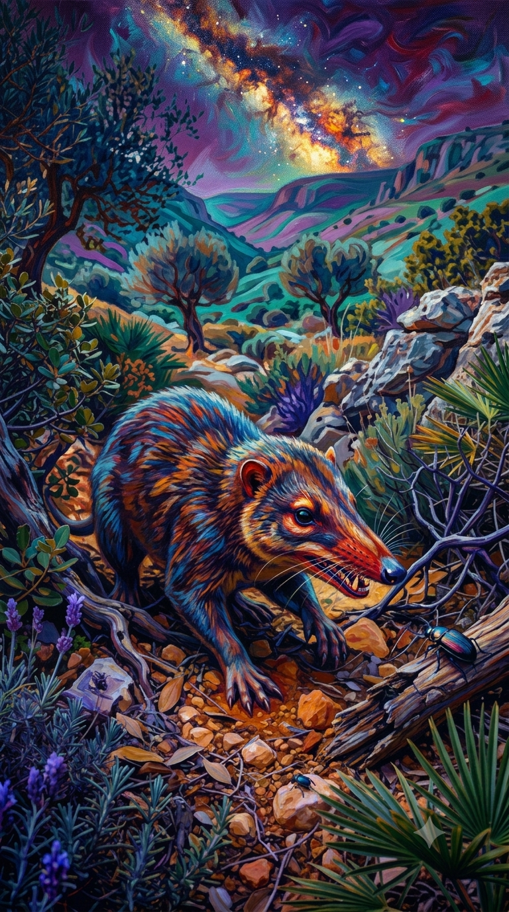
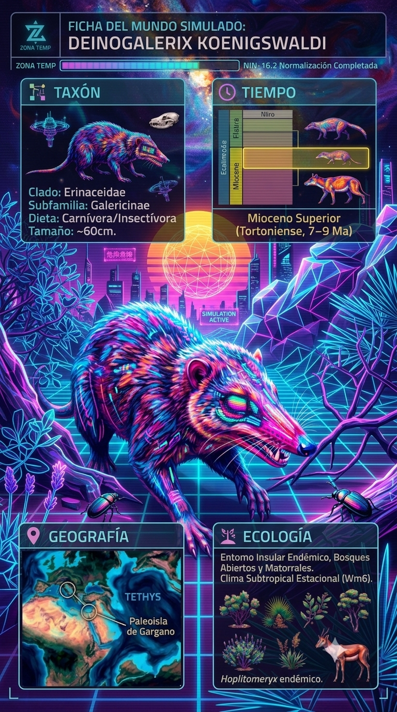

Paleoficha de Deinogalerix



Periodo: Mioceno Superior
Edad: Hace entre 10 y 7 millones de años.
Dieta: Carnívoro / Insectívoro oportunista.
Distribución: Archipiélago de Gargano, Italia.
TAXÓN:
Deinogalerix koenigswaldi
CLADO: Familia Erinaceidae (subfamilia Galericinae)
DIETA: Carnívoro / Insectívoro oportunista de gran tamaño
TAMAÑO: Cráneo de hasta 20 cm; longitud total estimada de 60 cm (el erinaceido más grande conocido)
LOCOMOCIÓN: Terrestre; adaptaciones para un estilo de vida de depredador terrestre en ecosistemas insulares.
TIEMPO:
Mioceno Superior (Messiniense), aproximadamente entre 10 y 7 millones de años.
GEOGRAFÍA:
Paleoislas del Archipiélago de Gargano, Italia (Paleomediterráneo). Sistema insular aislado (microcontinente). Ambiente paleoecológico de bosques abiertos y matorrales estacionales mediterráneos.
ECOLOGÍA:
Vegetación xerófila y bosques mediterráneos adaptados a la estacionalidad. Fauna asociada con Hoplitomeryx, roedores gigantes y lagartos monitor. Ocupaba el nicho de depredador de pequeños vertebrados y otros animales, desempeñando un papel ecológico similar al de pequeños carnívoros continentales. Su aislamiento favoreció una evolución sin competencia de grandes depredadores.
CLIMA:
Wm6 (Estacional templado). Mediterráneo, con veranos secos e inviernos suaves.
ESTADO ECOLÓGICO:
Especializado. Representa uno de los ejemplos más destacados de gigantismo insular en mamíferos.
Vídeo PalEntropía:
▶ Ver Short en YouTube